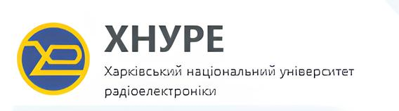

Оформлений текст
Загальна кількість перестановок з n елементів дорівнює добутку всіх цілих чисел від 1 до n: Pn = 1•2•3•...•(n-2)•(n-1)•n.
Список
- Функціональне програмування (Фпр)
- Викладачі: Міхаль О. П., Дяченко Д. О.;
- Групи: КІУКІ-22-3,4,5, КІУКІу-23-2 ;
- Групи: КІУКІ-22-3,4,5, КІУКІу-23-2 ;
- Моделювання систем (МодС)
- Викладачі: Горбачов В. О., Тимошенко Д. О.;
- Групи: КІУКІ-22-1;КІУКІи-22-1;КІУКІ-22-2,3,4,5;КІУКІу-23-1;КІУКІу-23-2
- Архітектура комп'ютерів (АК)
- Викладачі: Росінський Д. М., Сітніков В. І., Єрошенко О. А.;
- Групи: КІУКІ-22-1, КІУКІи-22-1, КІУКІ-22-2,3,4,5;
- Системне програмне забезпечення (СПз)
- Викладачі: Мартовицький В. О., Бондаренко М. Е., Романюк О. С.;
- Групи: КІУКІ-22-1, КІУКІи-22-1, КІУКІ-22-2,3,4,5;
- Internet-технології (IntT)
- Викладачі: Іващенко Г.С., Журило О.Д., Тимошенко Д.О;
- Групи: КІУКІ-22-3,4,5; КІУКІу-23-1;
- Комп'ютерна схемотехніка (КСх)
- Викладачі: Корабльов М. М., Олійник К. О.;
- Групи: КІУКІ-22-1, КІУКІи-22-1,КІУКІ-22-2,3,4,5;
- Фізичне виховання (ФВ)
- За рахунок вільного часу студентів;
- Групи: КІУКІ-22-5;
- Імідж сучасного спеціаліста (ІССп)
- Викладачі: Митцева О. С.;
- Групи: (КІУКІ-22-)-1, (КІУКІу-23-)-2, (КІУКІу-23-)-3, (ВПВПС-22-)-4.
Таблиця
| Елемент | Символ | Атомна маса |
|---|---|---|
| Гідроген | H | 1.0079 |
| Берилій | Be | 9,0122 |
| Індій | In | 114,82 |
| Ксенон | Xe | 131,29 |
Чекбокси з оформленням
Посилання та зображення
Натисніть на зображення, щоб перейти на відповідні сайти.
Цей текст буде обтікати зображення зліва. Коли ми додаємо більше тексту, він буде заповнювати простір, що залишився праворуч від зображення. Це дозволяє зберегти візуальну привабливість і зручність читання. Текст продовжиться вниз, при цьому зображення залишатиметься зліва, а текст будет обтікати його, заповнюючи простір. Можна додавати стільки тексту, скільки потрібно.